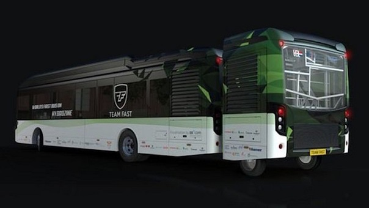

Desarrollan autobus que se mueve por ácido de hormigas y abejas

Un equipo de estudiantes de la Universidad de Tecnología de Eindhoven, presentó un autobús que funciona gracias a un ácido que segregan hormigas y abejas y que comenzará a circular por la ciudad a finales de año.
Cuando se trata de encontrar una alternativa sostenible al transporte público en las ciudades, surgen proyectos tan interesantes como Olli, un minibús impreso en 3D, con capacidad para 12 pasajeros o Harry, un pequeño bus autónomo que recorre las calles de Londres.
En ese hilo de propuestas y realidades, surge la de un grupo de estudiantes de la Universidad Técnica de Eindhoven, en Holanda, unidos bajo el nombre de Team Fast. Se trata de un autobús cuya principal peculiaridad es que funciona con ácido fórmico.
Este ácido es el que inyectan algunas especies de hormigas y abejas cuando muerden o pican. Lo que ha hecho este equipo de estudiantes es encontrar la forma para que el ácido pueda transportar, de manera eficiente, los ingredientes que necesitan las células de combustible de hidrógeno, que se utilizan para impulsar vehículos eléctricos.
Este nuevo combustible, al que bautizaron como “hidrocina”, es líquido, lo que facilita su transporte y hace posible que se emplee de igual forma que cuando se llena el depósito de un carro convencional.
Para producir hidrocina no fue necesario matar hormigas ni abejas, sino que se creó a través de una reacción química entre agua (H2O) y dióxido de carbono (CO2).
De acuerdo a informaciones facilitadas por Team Fast, el autobús comenzará a circular por calles holandesas a finales del presente año.